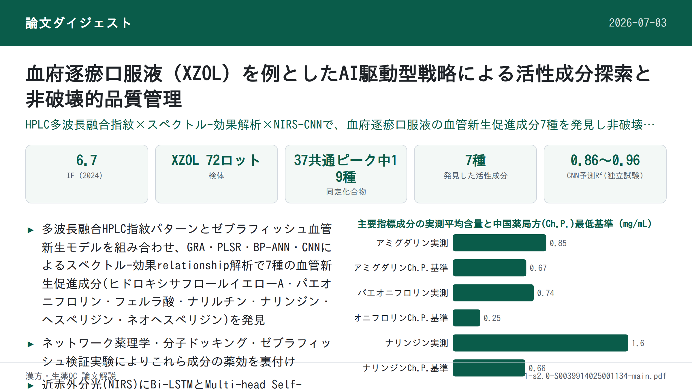

血府逐瘀口服液（XZOL）を例としたAI駆動型戦略による活性成分探索と非破壊的品質管理

書誌情報
- 標題（原題）: An AI-driven strategy for active compounds discovery and non-destructive quality control in traditional Chinese medicine: A case of Xuefu Zhuyu Oral Liquid
- 著者・所属: Lele Gao, Liang Zhong, Tingting Feng, Jianan Yue, Qingqing Lu, Lian Li, Aoli Wu, Guimei Lin, Qiuxia He, Kechun Liu, Guiyun Cao, Zhaoqing Meng, Lei Nie, Hengchang Zang（山東大学薬学院・チーロー医学院 NMPA医薬品評価技術重点実験室／山東省科学院生物研究所（斉魯工業大学）／山東宏済堂製薬集団）
- 掲載誌・巻号・DOI: Talanta, 287 (2025) 127627, https://doi.org/10.1016/j.talanta.2025.127627
- インパクトファクター: 6.7（Talanta, JCR 2024 / Clarivate）
- 受理経過 / ライセンス: 2024年12月13日投稿、2025年1月21日改訂受理、2025年1月22日受理、2025年1月23日オンライン公開。© 2025 Elsevier B.V. All rights are reserved, including those for text and data mining, AI training, and similar technologies.
要旨（Abstract）
伝統中国医学（TCM）の現代化・国際化は、活性成分の不明瞭さと品質管理の不十分さといった課題に直面している。本研究は血府逐瘀口服液（Xuefu Zhuyu Oral Liquid, XZOL）を例として、活性成分探索と非破壊的品質管理のための人工知能（AI）駆動型戦略を提案した。第一に、XZOLの化学組成を包括的に特徴づけるため、多波長融合高速液体クロマトグラフィー（HPLC）指紋パターンを構築した。第二に、PTK787誘発性の分節間血管（intersegmental vessels, ISVs）損傷ゼブラフィッシュモデルにおいてXZOLの血管新生促進効果を評価した。次に、グレー関連解析（GRA）、部分最小二乗回帰（PLSR）、誤差逆伝播型人工ニューラルネットワーク（BP-ANN）、畳み込みニューラルネットワーク（CNN）を組み込んだスペクトル-効果relationshipモデルにより、7種の血管新生促進活性成分（ヒドロキシサフロールイエローA、パエオニフロリン、フェルラ酸、ナリルチン、ナリンジン、ヘスペリジン、ネオヘスペリジン）を発見した。さらに、ネットワーク薬理学、分子ドッキング、ゼブラフィッシュ実験によりこれらの化合物の薬効をさらに検証した。最後に、近赤外分光法（NIRS）に基づく迅速・非破壊的な品質管理システムを確立した。このシステムは、多変量統計プロセス管理（MSPC）のHotelling T²統計量とDistance to Model X（DModX）統計量を組み合わせることで期限切れ検体と正常検体を効果的に判別し、さらに双方向長短期記憶（Bi-LSTM）とマルチヘッド自己注意機構（MHSA）ネットワークを統合したCNNモデルにより上記活性成分の含量を精度良く予測した。本研究は、活性成分に基づくTCMの全体的品質管理戦略を提供することで、AI駆動型戦略がTCMの標準化と国際的認知の向上に資する可能性を示すものである。
1. 序論（Introduction）
伝統中国医学（TCM）は、TCM理論体系に導かれた植物・鉱物・動物由来の広範な薬用物質群を包含し、数千年にわたり、特に東アジアにおいて医療上重要な役割を果たしてきた[1]。しかしTCMの現代化・国際化は、主に活性成分と治療効果の作用機序の不明瞭さ、および製剤の品質のばらつきという重大な課題によって制約されている[2]。現行のTCM品質評価手法は、1種または数種のマーカー化合物の定量に焦点を当てることが多いが、この手法はTCMの多成分・多標的という性質を捉えるには不十分である。品質規格として選択される化合物が、必ずしも臨床効果と関連する、あるいはそれを十分に代表するとは限らない[3]。これらの課題が、TCM製剤の標準化と臨床実践における効能の一貫性確保を困難にしている。
各種TCM製剤の中でも、血府逐瘀口服液（XZOL）はその広範な臨床使用と有効性、特に冠状動脈性心疾患（CHD）などの心血管疾患（CVDs）治療において際立っている[4,5]。TCMにおいてCHDは「胸痺」「心痛」に分類され、血脈阻滞が主な病因とされる[6–8]。XZOLは血府逐瘀湯に由来し、中国十大名方の一つであり、清代の医家・王清任による『医林改錯』に初めて記載された[9]。その処方は11種の生薬から構成され、活血化瘀（血行促進・瘀血除去）の効能を持つ[10]。確立された臨床効果にもかかわらず、XZOLの治療効果、特に血管新生促進作用の活性成分は依然としてほとんど解明されていない。さらに、現行の中国薬局方（2020年版、Ch.P.）に収載されているXZOLの品質規格は不十分であり、アミグダリン、パエオニフロリン、ナリンジンといった少数のマーカー化合物に主眼を置き、より広範な活性成分群には十分に対応できていない。これらの制約を克服するには、TCMの全体的な品質管理と治療効果の一貫性確保のために、現代的な分析技術とデータ駆動型アプローチが不可欠である。
ゼブラフィッシュ（Danio rerio）は、独自の利点から薬物活性スクリーニングと安全性評価のためのin vivoモデルとして広く用いられるようになった。ゼブラフィッシュはヒトと高い遺伝的相同性を有し、特に血管新生・血管発生に関連する遺伝子において顕著である。この遺伝的類似性により、血管新生刺激に対する生物学的経路と応答が保存されており、ゼブラフィッシュはヒトの血管新生プロセスを予測する理想的なモデルとなっている[11,12]。ゼブラフィッシュ胚の透明性はさらに、血管発生に不可欠であり血管新生促進効果評価の信頼できるプラットフォームとなる分節間血管（ISVs）形成を含む血管新生イベントのリアルタイム・非侵襲的可視化を可能にする[13]。
クロマトグラフィー指紋パターンはTCM品質評価における有用なツールとなっているが、化学プロファイルと薬理効果を完全に相関づけることができないという限界がある[14]。この限界に対処するため、統計的手法を用いて化学成分と生物活性を結びつけるスペクトル-効果relationship解析が、活性成分発見のための有望な技術として導入されてきた。この手法は単一の化学マーカーのみに依存する手法の限界を克服し、TCMのような多成分薬における品質管理の強力なツールを提供する[15,16]。しかし、従来のクロマトグラフィー手法は労力・費用がかかり破壊的であることが多く、検体の消耗と品質管理プロセスにおける非効率を招く。これらの欠点は、より環境負荷が低く効率的で非破壊的な品質管理技術の必要性を浮き彫りにしている。この点で近赤外分光法（NIRS）は有望な解決策として台頭しており、TCMの品質管理に広く応用されている[17,18]。さらに、携帯型NIR分光計は、コンパクトなサイズ、迅速な検出、低コストという顕著な利点を有しながら、卓上型モデルに匹敵する高い感度と性能を提供し、リアルタイム・現場分析に理想的である[19,20]。
人工知能（AI）とTCMの融合は、先端技術と伝統医学の変革的な交差点を代表するものである。特に機械学習は、薬用材料の精密な真贋鑑定を可能にし、処方最適化を支援し、治療効果と安全性を予測し、個別化された投薬推奨を提供する[21–24]。既存の手法と比較して、AIはスペクトルデータと治療効果の間の微妙な関係を明らかにすることができ、これは従来手法が化合物間の複雑な非線形相互作用を扱う能力の限界から見落としがちな部分である。これにより新規活性成分の発見が支援される。さらに、単一化合物または狭い範囲の化合物に着目する標準的手法とは異なり、AIは多次元データを全体的な視点から処理・解析することができる。この能力により、複数の活性成分の同時検出が可能となり、TCM製剤の品質をリアルタイムで監視する能力が強化される。この革新的な相乗効果は、TCM研究開発の効率を著しく高め、品質管理措置を強化し、臨床精度を洗練させ、TCMの現代化と国際的な妥当性を前例のない水準へと推し進める[25,26]。
本研究は、XZOLの血管新生促進作用を例として、活性成分探索と非破壊的品質管理のためのAI駆動型戦略を提案した。Fig. 1に示す研究フローは以下のステップからなる：(1) 高速液体クロマトグラフィー（HPLC）指紋パターンを構築し全体的な化学組成を特徴づける；(2) XZOLの異なるバッチのPTK787誘発性ISVs損傷ゼブラフィッシュに対する血管新生促進効果を評価する；(3) スペクトル-効果relationship解析により活性成分を発見する；(4) ネットワーク薬理学、分子ドッキング、ゼブラフィッシュにより活性成分を検証する；(5) NIRSに基づく迅速・非破壊的な品質管理システムを確立する。本戦略は、活性成分に基づくTCMの全体的な品質管理システムを提供し、伝統と現代の橋渡しをしながらTCMの国際標準化とグローバル化を促進するものである。
補足: 原文Fig. 1（研究フロー図）は本文中の図として掲載されているが、本ページでは図の取り込みができなかったため、上記の5ステップの説明をもって代替する（原文参照）。
2. 材料と方法（Materials and Methods）
2.1. 検体と試薬
バッチ番号2011004～2401001の範囲にわたる計72バッチのXZOLを宏済堂有限公司（Hongjitang Co., Ltd.）から入手した。詳細はSupplementary Material Table S1に示されている。
クロロゲン酸（CAS: 327-97-9）、ヒドロキシサフロールイエローA（CAS: 146087-19-6）、アミグダリン（CAS: 29883-15-6）、パエオニフロリン（CAS: 23180-57-6）、フェルラ酸（CAS: 1135-24-6）、エリオシトリン（CAS: 13463-28-0）、ナリルチン（CAS: 14259-46-2）、ナリンジン（CAS: 10236-47-2）、ヘスペリジン（CAS: 520-26-3）、ネオヘスペリジン（CAS: 13241-33-3）、ナリンゲニン（CAS: 480-41-1）、グリチルリチン酸アンモニウム塩（CAS: 53956-04-0）、リクイリチゲニン（CAS: 578-86-9）、ケンフェロール（CAS: 520-18-3）、ノビレチン（CAS: 478-01-3）の各標準品は成都Herbpurify社（HPLC純度98%以上）より購入した。シネフリン（CAS: 94-07-5）、5-ヒドロキシメチルフルフラール（CAS: 67-47-0）、没食子酸（CAS: 149-91-7）はYuanye Bio-Technology社（HPLC純度98%以上）より、タンゲレチン（CAS: 481-53-8）はPureChem Standard社（HPLC純度98%以上）より購入した。クロマトグラフィーグレードのアセトニトリルは安徽TEDIA社より、ギ酸はAladdin Biochemical Technology社より購入し、精製水は娃哈哈集団（中国）より供給された。
プロナーゼE（CAS: 9036-06-0）、トリカイン（CAS: 582-33-2）、フェニルチオ尿素（PTU, CAS: 103-85-5）はSoleibao Technology社より、バタラニブ（CAS: 212141-54-3, PTK787）は南通飛宇生物科技社より購入した。丹紅注射液（DHI、バッチ番号230610112）は山東歩長製薬社より入手した。DMSOは上海生工生物工程社より供給され、CuSO4・5H2Oなどの各種試薬は中国医薬集団化学試薬社より購入した。
2.2. XZOLのHPLC指紋パターン
XZOLの化学組成は、ダイオードアレイ検出器（DAD）を備えたAgilent 1260 HPLCシステムを用いて特徴づけた。クロマトグラフィー分離はAgilent ZORBAX SB-C18カラム（250 mm×4.6 mm、5 μm）で行った。移動相は0.2%ギ酸水溶液（A）とアセトニトリル（B）であり、グラジエント溶出条件は以下の通り：0–15 min、3–12% B；15–30 min、12–16% B；30–40 min、16–20% B；40–50 min、20–26% B；50–60 min、26–45% B；60–70 min、45–95% B；70–80 min、95% B、流速1.2 mL/min。カラム温度は35℃、注入量は10 μLとした。検出は210 nm、237 nm、254 nm、280 nm、300 nm、330 nm、367 nm、403 nmの複数波長で行った。
2.3. ゼブラフィッシュにおけるXZOLの血管新生促進効果
2.3.1. ゼブラフィッシュ胚の採取
トランスジェニック系統Tg(flk1:EGFP)ゼブラフィッシュ（血管内皮細胞が増強緑色蛍光タンパクを発現し、血管系の直接観察を可能にする）は、山東省科学院薬物スクリーニング重点実験室より提供された。胚は成体の雄雌を1:1の割合で交配して得た。受精後、胚を洗浄し、5 mM NaCl、0.17 mM KCl、0.33 mM CaCl2・2H2O、0.16 mM MgSO4・7H2Oに0.1%メチレンブルーを加えた培養液に移した。培養液は28℃に維持し、後続の実験に用いた。メラニン産生を抑制するため、受精後6時間（hpf）に0.003% PTUを培養液に添加した。すべてのゼブラフィッシュは山東省科学院生物研究所実験動物福祉倫理委員会の許可（承認番号SWS20210815）のもとで使用した。
2.3.2. ゼブラフィッシュ処置
XZOLの血管新生促進効果を評価するため、原系統のゼブラフィッシュを用いた。本実験実施前に、XZOLの安全濃度を評価し、PTK787およびXZOLの至適濃度も決定した[27]。21–22 hpfの時点で、1 mg/mLプロナーゼE溶液を用いて胚膜を除去した。その後、健常で発生の進んだ胚を選別し、24ウェルプレートに1ウェルあたり10個体ずつ配置した。以下の4群を設定した：対照群、モデル群（0.15 μg/mL PTK787）、陽性対照群（0.15 μg/mL PTK787＋30 μL/mL DHI）、XZOL群（0.15 μg/mL PTK787＋各バッチのXZOL 2 μL/mL）。24時間後、IX73倒立蛍光顕微鏡（オリンパス、日本）でゼブラフィッシュの画像を取得した。ISVsの総長はImageJ-win64ソフトウェアで定量し、血管新生促進効果は以下の式(1)で算出した。GraphPad Prism 9.5.0ソフトウェアで一元配置分散分析を行い、差はp<0.05で統計的有意とした[28–30]。すべての実験は3回反復で実施した。
血管新生促進効果(%) = (L_sample − L_model) / (L_control − L_model) × 100% … 式(1)
補足: 原文の式(1)はPDF抽出の都合上、分子・分母の項が入れ替わって表示される箇所があったため、文脈（対照群・モデル群との差分比較）から意味が通る形に整理して訳出した。L_sampleはXZOLまたはDHI群のISVs長、L_controlは対照群のISVs長、L_modelはモデル群のISVs長を表す。正確な数式は原文参照。
2.4. スペクトル-効果relationship解析
2.4.1. グレー関連解析（GRA）
GRAは複数の変数間の相関度を評価するための多因子解析手法である。本研究では、XZOLの血管新生促進効果とHPLCピーク面積との関係を評価するためにGRAを用いた。関連度0.6超は共通ピークと血管新生促進効果の間に相関があることを示し、0.8超は高度に有意な相関を示唆する[31]。
2.4.2. 部分最小二乗回帰解析（PLSR）
PLSRはHPLCピーク面積（X）と血管新生促進効果（Y）の線形関係を解析するための重回帰手法である。本研究では、回帰係数の正負が化合物の血管新生への作用方向を示し、正の回帰係数を持つ化合物はISVsの成長を促進する、すなわち血管新生における役割を持つと同定された。変数重要度投影（VIP）値は各化合物の血管新生への重要度を示し、VIP>1の化合物は血管新生への重要な寄与因子とみなされた[32]。
2.4.3. 誤差逆伝播型人工ニューラルネットワーク（BP-ANN）
BP-ANNは入力層、隠れ層、出力層からなる誤差逆伝播法を用いたフィードフォワード型ニューラルネットワークである。本研究では、HPLCピーク面積が血管新生促進効果に与える影響を定量化するため、BP-ANNを平均影響値（MIV）解析と組み合わせて用いた。具体的には、入力値に±10%の調整を加え、独立変数の変化が出力結果に与える対応する影響値（IV）を算出することで、各変数の影響を評価した。MIVはIVの平均値であり、その正負は各入力と出力の関係の相関方向を示し、絶対値は影響の程度を表す。このBP-ANNとMIV解析の組み合わせにより、モデルの解釈可能性と信頼性が向上し、どの化合物が血管新生に最も寄与しているかの発見に役立った[33]。
2.4.4. 畳み込みニューラルネットワーク（CNN）
CNNは構造化データを処理・解析するために設計された先進的な深層学習アーキテクチャである。本研究では、血管新生促進効果に関連する活性成分を発見するためにCNNモデルを用いた。CNNアーキテクチャの時系列依存性のモデル化能力を強化するため、双方向長短期記憶（Bi-LSTM）ネットワークを統合した。Bi-LSTMは順方向・逆方向の両方向でデータを処理する再帰型ニューラルネットワークの一種であり、過去と未来の両方の入力から時間的依存性を捉える。この双方向学習アプローチにより、モデルは系列データの文脈を十分に理解でき、時間経過に伴うパターンや動的な設定内でのパターン解析を必要とするタスクに特に重要である。Bi-LSTM層の導入によりモデルはデータをより包括的に理解し、複雑なパターンの検出能力と動的な文脈理解を要するタスクでの性能が向上する[34]。さらに、CNNアーキテクチャ内にマルチヘッド自己注意機構（MHSA）を組み込んだ。これによりモデルは複数の文脈関連特徴に同時に注目できる。従来の注意機構と異なり、MHSAはモデルが入力データの異なる部分に独立して注目することを可能にし、様々な視点からデータ内の複雑な関係を捉える。これによりモデルが複雑なパターンを処理・理解する能力が向上し、タスクへの関連性に応じて各特徴に異なる重要度を割り当てることができる[35]。
これらの強化（双方向学習のためのBi-LSTMと多面的注意のためのMHSA）は、CNNモデルの性能を総合的に向上させる。これにより、モデルは複雑で高次元なデータを効率的に処理でき、より正確な予測と解釈可能性の向上につながる。さらに、各機能層の特徴マップの可視化は変数変化の動的な表現を提供し、重要変数の同定に新たな知見をもたらす[36]。
2.5. 活性成分の検証
スペクトル-効果relationship解析により発見された活性成分の治療可能性を包括的に検証するため、ネットワーク薬理学および分子ドッキング手法を用いた。これらの手法により、潜在的な標的と関連経路を体系的に探索し、治療効果のin silicoでの初期検証を行った（詳細な手法はSupplementary Materialに記載）[37]。これらの知見をさらに裏付けるため、ゼブラフィッシュモデルを用いたin vivo検証を実施した。標準化合物はDMSOに溶解して100 mMのストック溶液として調製し、実験群は一連の希釈により効果を評価した。
2.6. 迅速かつ非破壊的な品質管理システム
2.6.1. システム開発とスペクトル取得
品質管理システムは、タングステンハロゲン光源（HL-2000-FHSA-LL、Ocean Optics、中国）、3Dプリント製サンプルセル、携帯型NIR分光計（SW2540、OTO Photonics社、中国）、2本の光ファイバー（広州景頤光電科技社、中国）、自社開発ソフトウェア（Supplementary Material Fig. S1）から構成された。本システムは、光路の精密な整合を確保する直径約19 mmの精巧に調整されたバイアルホルダー内に検体を無傷の状態で保持することで、非侵襲的なスペクトル解析手法を導入した。
スペクトル取得前に、機器の温度変動が安定範囲内に収まるよう、装置を1時間安定化させた。波長範囲は約900–1700 nmで248変数とした。パラメータは積算時間8 msで最適化し、各スペクトルは50回スキャンの累積平均とした。ソフトウェアの元の出力データは光強度であり、生スペクトルは以下の式(2)に従って元データを変換することで取得した。参照スペクトルは大気により取得し、暗スペクトルは光源を消灯して取得した。操作誤差を低減するため、各検体について3回連続でスペクトルを取得し、その平均スペクトルを最終スペクトルとした。本システムはスペクトルの信頼性を高めるだけでなく検体の完全性を保持し、非破壊分析への可能性を示すものである。
A = −log[(I_sample − I_dark) / (I_ref − I_dark)] … 式(2)
ここでI_sample、I_ref、I_darkはそれぞれ検体、大気、暗状態の強度値である。
2.6.2. モデル構築と評価
XZOLの品質管理は定性・定量の両側面から構成された。定性面では、実世界由来のXZOL検体（72検体）について有効期限を評価した。定量面では、濃縮・希釈法により増幅したXZOL中の活性成分含量を検出した（280検体）。
定性解析では、主成分分析（PCA）を用いて元の変数を主成分（PCs）に変換し、検体間の分散を捉えることで高次元の複雑なデータを縮約した[38]。PCAに基づく多変量統計プロセス管理（MSPC）手法、具体的にはHotelling T²統計量とDModX（Distance to Model X）統計量を用いて検体の有効期限を評価した[17,39]。
定量解析では、線形PLSRおよび非線形CNNモデルを適用して活性成分の含量を予測した。PLSRモデルは異なる前処理法・変数選択法を用いて構築され、堅牢なモデル開発アプローチを示した。CNNモデルはスペクトル-効果relationship解析で用いたものと同一のネットワーク構造を用いてBi-LSTMとMHSAで補強した。この革新的な統合は、モデルの予測力を高めるだけでなく、品質管理・活性成分探索研究における深層学習アーキテクチャの汎用性と適応性を裏付けるものである。モデルの有効性は、校正（R²c）、検証（R²v）、独立試験（R²t）の決定係数、および校正（RMSEC）、検証（RMSEV）、独立試験（RMSET）の二乗平均平方根誤差を用いて判定した。R²値が高くRMSE値が低いモデルほど信頼性・精度が高いとみなした[40]。さらに残差予測偏差（RPD）を用いてモデルを評価し、許容基準はRPD値>2とした[41]。NIRS予測値とHPLC実測値の間に有意差があるかを評価するため、対応のあるt検定（α=0.05）を用いた[42]。
3. 結果と考察（Results and Discussions）
3.1. HPLC指紋パターンの構築
TCMの複雑さを単一波長のクロマトグラムでは十分に捉えられないという課題に対処するため、多波長融合HPLC指紋パターンを用い、XZOLのより包括的な品質評価のためにHPLCの3次元情報を最大限に活用した。HPLC指紋パターンは各波長で生成され（Fig. 2(a)）、最大値融合法を用いることで多波長融合HPLC指紋パターン（黒線）が得られた。この指紋パターンは理論上、8波長にわたるデータの投影を表す。210 nm付近では溶媒を含む多くの化合物が強い応答を示すため、この波長はアミグダリンの定量のみに用いた。異なるXZOLバッチの融合HPLC指紋パターンを比較したところ（Fig. 2(b)）、37個の共通ピークが観察され（Fig. 2(c)）、これは全ピーク面積の95%以上を占めた。これらのピークのうち19個が標準品を用いて同定された：シネフリン(1)、没食子酸(6)、5-ヒドロキシメチルフルフラール(8)、クロロゲン酸(13)、ヒドロキシサフロールイエローA(14)、アミグダリン(16)、パエオニフロリン(19)、フェルラ酸(20)、エリオシトリン(21)、ナリルチン(24)、ナリンジン(25)、ヘスペリジン(26)、ネオヘスペリジン(27)、リクイリチゲニン(29)、ナリンゲニン(31)、ケンフェロール(32)、グリチルリチン酸(34)、ノビレチン(36)、タンゲレチン(37)。
融合HPLC指紋パターンは直線性、精度、再現性、安定性、回収率について検証された。Table 1にまとめた通り、直線性の相関係数はいずれも0.9900を超え、精度・再現性・安定性の相対標準偏差（RSD）はいずれも5.00%未満であった。回収率は95.01%から109.38%の範囲にあり、RSDは5.00%未満であった。これらの結果は、HPLC指紋パターン法が優れた精度、正確さ、安定性、再現性を有し、XZOLの品質評価に適していることを裏付けている。一方で、72バッチのXZOLにおけるアミグダリン、パエオニフロリン、ナリンジンの平均含量はそれぞれ0.85、0.74、1.60 mg/mLであり、現行Ch.P.が定める最低基準（それぞれ0.67、0.25、0.66 mg/mL）を大きく上回っていた。期限切れ検体でさえこれらの基準を満たしており、現行の品質管理基準の不十分さがさらに浮き彫りとなった。
Table 1. XZOL中化合物の直線回帰・精度・再現性・安定性・回収率
| ピークNo. | 化合物 | 波長(nm) | 検量線 | R² | 直線範囲(mg/mL) | 精度RSD%(n=6) | 再現性RSD%(n=6) | 安定性RSD%(n=6) | 回収率(%)(n=6) | 回収率RSD%(n=6) |
|---|---|---|---|---|---|---|---|---|---|---|
| 1 | シネフリン | 280 | y=1110.9x−6.5726 | 0.9997 | 0.0226–0.9664 | 1.58 | 0.97 | 1.71 | 99.79 | 2.65 |
| 6 | 没食子酸 | 280 | y=11509x+24.82 | 0.9998 | 0.0074–0.5888 | 1.88 | 2.12 | 2.01 | 108.62 | 2.97 |
| 8 | 5-ヒドロキシメチルフルフラール | 280 | y=29621x−160.1 | 0.9997 | 0.0100–0.8000 | 3.60 | 1.63 | 3.52 | 105.32 | 3.04 |
| 13 | クロロゲン酸 | 330 | y=9584.6x+30.816 | 0.9930 | 0.005095–0.5095 | 2.05 | 0.44 | 2.93 | 95.01 | 2.15 |
| 14 | ヒドロキシサフロールイエローA | 403 | y=5951x−15.454 | 0.9995 | 0.0090–1.0824 | 1.86 | 1.35 | 1.95 | 102.32 | 3.91 |
| 16 | アミグダリン | 210 | y=2736.1x−96.214 | 0.9988 | 0.0204–4.0720 | 2.79 | 2.57 | 3.40 | 103.87 | 2.88 |
| 19 | パエオニフロリン | 237 | y=3480.93x+6.63 | 0.9998 | 0.0404–4.8480 | 0.81 | 1.95 | 1.88 | 103.08 | 0.26 |
| 20 | フェルラ酸 | 300 | y=16962x+25.917 | 0.9999 | 0.0249–0.9952 | 1.68 | 1.16 | 1.98 | 107.58 | 4.70 |
| 21 | エリオシトリン | 280 | y=6294.2x+2.7652 | 0.9998 | 0.0020–0.0800 | 1.88 | 2.40 | 1.38 | 109.38 | 2.46 |
| 24 | ナリルチン | 280 | y=5904.1x+15.652 | 0.9994 | 0.0214–0.6840 | 0.11 | 0.25 | 0.36 | 99.04 | 0.33 |
| 25 | ナリンジン | 280 | y=6114.3x+146.47 | 0.9992 | 0.0242–2.8992 | 0.37 | 0.25 | 0.35 | 99.98 | 0.91 |
| 26 | ヘスペリジン | 280 | y=8584.4x−21.938 | 0.9994 | 0.0045–0.7216 | 0.11 | 0.19 | 0.40 | 103.13 | 2.61 |
| 27 | ネオヘスペリジン | 280 | y=7158.2x−17.973 | 0.9997 | 0.0291–2.7912 | 0.07 | 0.17 | 0.29 | 101.58 | 0.96 |
| 29 | リクイリチゲニン | 237 | y=20861x−98.649 | 0.9991 | 0.0048–0.3824 | 0.55 | 0.16 | 0.43 | 96.29 | 2.69 |
| 31 | ナリンゲニン | 280 | y=14097x+2.9713 | 0.9999 | 0.0019–0.1499 | 1.26 | 0.64 | 1.00 | 99.75 | 2.93 |
| 32 | ケンフェロール | 367 | y=13535x−27.958 | 0.9969 | 0.0199–0.3984 | 3.20 | 3.46 | 3.34 | 107.11 | 1.81 |
| 34 | グリチルリチン酸 | 237 | y=567.16x−13.545 | 0.9918 | 0.0330–0.3304 | 0.32 | 0.80 | 0.59 | 108.32 | 1.98 |
| 36 | ノビレチン | 330 | y=14925x−1.8158 | 0.9999 | 0.0016–0.1280 | 0.11 | 0.54 | 0.64 | 98.11 | 1.65 |
| 37 | タンゲレチン | 330 | y=14305x+3.2934 | 0.9999 | 0.0015–0.1176 | 0.31 | 0.54 | 0.53 | 102.64 | 2.80 |
XZOLバッチ間の融合HPLC指紋パターンの類似度を算出しヒートマップとして可視化した。期限切れ検体を除き、全バッチの指紋パターン類似度は0.9を超え、一貫した品質と有効期限設定の妥当性が示された（Fig. 2(d)）。次元削減にはPCAを適用し、PC1とPC2がそれぞれ全変動の41.79%、24.40%を占め、累積寄与率は66.19%であった（Fig. 2(e)）。特筆すべきは、期限切れ検体S1–S7が95%信頼区間を超え、正常検体と比較して有意な差を示したことである[44]。階層的クラスター解析（HCA）は「ユークリッド」距離と「平均」連結法を用いてさらに検体を区別した。デンドログラムがHCA結果を可視化するために生成された（Fig. 2(f)）[45]。期限切れ検体と正常検体の相対距離は約40であった。加えて、有効期限に近いサンプルS9、S8、S12、S13も異常検体として同定された。
融合HPLC指紋パターンの類似度、HCA、PCAの結果はいずれも、本研究で構築した多波長融合HPLC指紋パターンが期限切れ検体と正常検体を区別する上での有効性を裏付けた。同定されたピークの中で、ナリンジンとネオヘスペリジンは正常検体と期限切れ検体で有意な差を示した。XZOLの血管新生促進効果は複数の化学成分の影響を受けており、活性成分を発見するにはスペクトル-効果relationshipモデルのようなさらなるケモメトリクス解析が必要であった。
補足: 本文中のFig. 2（8波長HPLC指紋パターンおよび融合指紋パターン、72バッチの融合指紋パターン、標準品との対比、類似度ヒートマップ、PCAスコアプロット、HCAデンドログラム）は、本ページでは図版として取り込めなかった（原文参照）。
3.2. ゼブラフィッシュモデルにおける血管新生促進効果の評価
ゼブラフィッシュ胚に対するXZOLの毒性試験により、最小致死濃度（LC1）、10%致死濃度（LC10）、半数致死濃度（LC50）はそれぞれ4.090、5.580、7.418 μL/mLと決定された（Supplementary Material Fig. S2）。Fig. 3(a)およびFig. 3(b)に示すように、ISVsの長さはPTK787濃度の増加とともに漸進的に減少した。0.15 μg/mLにおいて、PTK787はISVsの成長率を顕著に抑制したのに対し、XZOLはこの抑制作用を効果的に相殺した（代表画像はSupplementary Material Fig. S3を参照）。Fig. 3(c)に示すように、1、2、4 μL/mLのXZOLはいずれもISVs成長を有意に回復させ、2 μL/mLで最大の効果が認められた（代表画像はSupplementary Material Fig. S4を参照）。
各種XZOLバッチのさらなる評価により、その血管新生促進効果が確認された（Fig. 3(d)）。ISVs成長率はモデル群では対照群と比較して有意に低下し、陽性対照群ではモデル群と比較して有意に上昇した。試験した全XZOLバッチが血管新生促進効果を示したが、バッチ間で差異が認められ（Fig. 3(e)）、これらの変動は正規分布に従っていた（Fig. 3(f)）。さらに、期限切れXZOL検体の解析では、正常検体と比較して血管新生促進効果が低いことが明らかとなり、経時的なXZOLの化学組成の変化が示唆された（Fig. 3(g)）。保存期間中の化合物変化を定量するためにはさらなる解析が必要であった。
補足: 本文中のFig. 3（PTK787濃度依存性、XZOL濃度依存性、期限切れ/正常検体の代表画像、バッチ間差異、正規分布、有効期限との関係、平均±SEM, n=10）は本ページでは図版として取り込めなかった（原文参照）。
3.3. スペクトル-効果relationshipによる活性成分の発見
GRAは共通ピーク面積と血管新生促進効果の相関を探索するために用いられた。データ変換とグレー関連度の算出の結果、すべてのピークが0.6を超える関連度を示し、XZOLの血管新生促進効果が複数成分の相乗作用に由来する可能性が示唆された。Fig. 4(a)に示すように、7化合物（P3、P28、P30、P31、P32、P36、P37）は低相関領域（関連度<0.8）にあり、血管新生への寄与が限定的であることが示唆された。このうちピーク31、32、36、37はそれぞれナリンゲニン、ケンフェロール、ノビレチン、タンゲレチンと同定された。逆に、P2、P14、P18、P22、P25は最高の関連度（関連度>0.8）を示し、血管新生への有意な寄与を示唆した。P14とP25はそれぞれヒドロキシサフロールイエローAとナリンジンと同定された。
共通ピーク面積と血管新生促進効果の関係はさらにPLSRを用いて検討された。外れ値除去後の72バッチのXZOLは、x-y結合距離に基づくサンプルセット分割法を用いて校正セットと検証セットに2:1の比率で分割された。オートスケーリング法による前処理の後、5分割交差検証を用いて5個の潜在変数（LVs）を決定した。構築された予測モデルは強い予測精度を示した（Fig. 4(h)）。Fig. 4(b)に示すように、37個の共通ピークのうち16化合物（P1、P14、P16、P18、P19、P20、P21、P24、P25、P26、P27、P28、P31、P32、P36、P37）がVIP値1を超え（Fig. 4(c)）、血管新生における潜在的重要性を示した。特にピーク14、19、20、24、25、26、27は正の回帰係数を持ち、これらの化合物が血管新生を促進しうることが示唆された。
BP-ANNモデルはPLSRと同一のサンプル分割法を用いて構築され、BP-ANNのアーキテクチャはFig. 4(d)に示されている。Fig. 4(i)に示すように、校正セットと検証セットのR²値はいずれもPLSRと比較してさらに向上し、BP-ANNモデルが優れた非線形フィッティング効果を示すことが示された。MIV値>0の化合物は血管新生促進効果と正の相関を示し、MIV値が高いほど血管新生促進効果が強かった。Fig. 4(e)に示すように、MIV値が0を超える化合物は20個（P2、P3、P4、P6、P8、P10、P12、P14、P18、P19、P20、P22、P24、P25、P26、P27、P30、P32、P33、P35）あり、P2、P14、P19、P20、P24、P25、P26、P27は大きなMIV値を示し、これらの化合物が血管新生を促進しうることが示唆された。P5、P11、P16、P28、P34、P36、P37のMIV値は0未満で絶対値が大きく、これらの化合物が血管新生を抑制しうることが示唆された。
CNNの強力な特徴抽出能力により、共通ピーク面積と血管新生促進効果の間の複雑な関連を明らかにすることができた。本研究で用いたCNNのアーキテクチャはFig. 4(g)に示されている。CNNモデルの結果はFig. 4(j)に示す通り、モデル性能はPLSRおよびBP-ANNより優れていた。Fig. 4(f)の主要層の可視化から、P14、P15、P18、P19、P20、P24、P25、P26、P27が顕著な特徴を有することが示された。
補足: 本文中のFig. 4（GRA相関度プロット、PLSRのVIP値・回帰係数プロット、BP-ANNのアーキテクチャとMIV値プロット、CNNの主要層特徴とアーキテクチャ、各モデルの実測値vs予測値プロット）は本ページでは図版として取り込めなかった（原文参照）。
3.4. ネットワーク薬理学、分子ドッキング、ゼブラフィッシュモデルによる活性成分の検証
XZOLの共通ピーク面積と血管新生促進効果の間のスペクトル-効果relationshipは、GRA、PLSR、MIVを組み込んだBP-ANN、CNNを用いて包括的に解析された。この多次元解析により、7個のクロマトグラフィーピークが潜在的活性成分として予備的に同定された：ヒドロキシサフロールイエローA(14)、パエオニフロリン(19)、フェルラ酸(20)、ナリルチン(24)、ナリンジン(25)、ヘスペリジン(26)、ネオヘスペリジン(27)。次に、これらの化合物の薬効はネットワーク薬理学、分子ドッキング、ゼブラフィッシュによりさらに検証され、XZOLの治療効果への主要な寄与因子としての可能性が裏付けられた。
ネットワーク薬理学予測では、化合物と疾患の両方に共通する標的が計99個見出され、疾患治療における重要性が強調された（Fig. 5(a)）。化合物-標的-疾患ネットワークが構築・解析され（Fig. 5(b)）、7化合物すべてが高い次数中心性を示すことが明らかとなった。これは、これらの化合物がCHD治療に関連する主要な分子ネットワークの調節において中心的な役割を果たしうることを示唆する。さらに、タンパク質間相互作用（PPI）解析により、ALB、GAPDH、IL1B、PTGS2、FN1、EGFR、MMP9、CASP3、STAT3、SCRなど、CHDにおける治療作用の中心となるコア標的が強調された（Fig. 5(c)）。DAVIDプラットフォームによるGene Ontology（GO）エンリッチメント解析では、タンパク質分解や遺伝子発現の負の制御を含む治療効果に関わる重要な生物学的プロセス（BP）が明らかとなった。細胞成分（CC）は主に細胞膜に関連し、分子機能（MF）は主に同一タンパク質結合において重要な役割が強調された（Fig. 5(d)）。Kyoto Encyclopedia of Genes and Genomes（KEGG）経路エンリッチメント解析では、PI3K-AktやVEGFシグナル伝達経路など、XZOLが関与する複数の重要経路がさらに解明された（Fig. 5(e)）[46]。ネットワーク薬理学に加え、分子ドッキング結果（Fig. 5(f)）は活性成分とコア標的の間の強い結合親和性（≦−4.0 kcal/mol）を示し、その治療可能性、特にナリルチンの治療上の関連性を裏付けた。フェルラ酸は他の化合物と比較して結合が弱かったが、それでも全体の効果に有意義に寄与した。
これら7種の活性成分の血管新生調節効果はゼブラフィッシュモデルを用いて検証された（Fig. 5(g–m)）。代表画像はSupplementary Material Fig. S5に示されている。モデル群ではISVsの成長率が対照群と比較して有意に抑制された。7種の血管新生促進候補化合物は、より高濃度でフェルラ酸が効果減弱を示した点を除き、いずれもISV成長の増強を示し、これは分子ドッキング結果とも一致していた。これらの結果は、スペクトル-効果relationshipモデル、特にBP-ANNアプローチによる活性成分発見の信頼性を裏付けるものであった。最終的に、ヒドロキシサフロールイエローA、パエオニフロリン、フェルラ酸、ナリルチン、ナリンジン、ヘスペリジン、ネオヘスペリジンが血管新生促進の活性成分として確認され、活性成分探索におけるAI駆動型戦略の革新的な役割が強調された。
補足: 本文中のFig. 5（ネットワーク薬理学予測のVenn図・化合物-標的-疾患ネットワーク・PPI解析・GOエンリッチメント・KEGGエンリッチメント・分子ドッキングヒートマップ、および7化合物それぞれのISVs成長率への効果）は本ページでは図版として取り込めなかった（原文参照）。
3.5. 迅速かつ非破壊的な品質管理システムの確立
本研究では、Fig. 6(a)に示すように、自社開発のNIRSシステムをスペクトル取得に用いた。全XZOL検体の生NIRスペクトルはFig. 6(b)に示されており、本システムが非破壊的な方法で高品質なデータを取得できることを示している。
3.5.1. 定性的判別
Hotelling T²統計量とDModX統計量を用いた管理図解析によりXZOL検体を厳密に評価し、管理限界はそれぞれ2.4766および10.1665に設定された。Fig. 6(c)と(d)に示すように、検体S1、S2、S3、S5、S7–S13はHotelling T²限界を超え、検体S1–S7、S9、S11–S13はDModX限界を超えた。これら2つの統計量を組み合わせることで、期限切れ検体と正常検体の精密な判別が可能となり、TCM製造におけるライフサイクル管理という重要な課題に対応した。
3.5.2. 定量的検出
外れ値除去後（Supplementary Material Fig. S6）、残りの検体は校正セット、検証セット、独立試験セットに3:1:1の比率で分割し、XZOL中の7種の活性成分（ヒドロキシサフロールイエローA、パエオニフロリン、フェルラ酸、ナリルチン、ナリンジン、ヘスペリジン、ネオヘスペリジン）についてPLSRおよびCNNモデルをそれぞれ構築した。Table 2に示す性能パラメータから、R²cおよびR²vはいずれも0.80を超え、検証セットのRPDv値は2を大きく上回り、検証セットにおける堅牢な予測能力が示された。独立試験検体についても、全モデルの予測でR²t値が0.80超、RPD値が2超であった。さらに対応のあるt検定の結果、NIRS予測値とHPLC実測値の間に有意差は認められず（P>0.05）、NIRSが活性成分定量における従来のHPLC法の代替として信頼性・正確性を有することが検証された。特筆すべきは、CNNモデルが精度の面でPLSRモデルを一貫して上回り、RPDt値がわずかに高く、予測値が1:1直線に近く一致した点である（Fig. 6(e–k)）（Supplementary Material Fig. S7）。このことは、CNNモデルがXZOL中の活性成分の定量においてPLSRより精密で信頼性の高い予測を提供することを示している。計算速度の面では、CNNモデルはより複雑なアーキテクチャのためPLSRモデルよりも訓練時間が長くなる傾向がある。しかし、訓練後のCNNモデルは、特にリアルタイム応用において著しく高速な予測を実現する。この特性により、迅速な意思決定が製造中の一貫性と品質確保に不可欠なTCM品質管理においてCNNは高い適合性を持つ。さらに、CNNの大規模データ処理能力と新規パターンへの適応能力は、動的で高スループットな環境における有用性をさらに高める。
Table 2. PLSRおよびCNNモデルのパラメータ結果
| モデル | 化合物 | RMSEC(mg/mL) | R²c | RMSEV(mg/mL) | R²v | RPDv | RMSET(mg/mL) | R²t | RPDt | P値(α=0.05) |
|---|---|---|---|---|---|---|---|---|---|---|
| PLSR | ヒドロキシサフロールイエローA | 0.0273 | 0.8178 | 0.0300 | 0.7947 | 2.2070 | 0.0240 | 0.8355 | 2.4654 | 0.7663 |
| PLSR | パエオニフロリン | 0.1436 | 0.8666 | 0.1329 | 0.8713 | 2.7880 | 0.1320 | 0.8394 | 2.4953 | 0.8382 |
| PLSR | フェルラ酸 | 0.0068 | 0.8099 | 0.0064 | 0.8406 | 2.5050 | 0.0052 | 0.8620 | 2.6920 | 0.1094 |
| PLSR | ナリルチン | 0.0202 | 0.8455 | 0.0227 | 0.7637 | 2.0574 | 0.0181 | 0.7805 | 2.1344 | 0.1170 |
| PLSR | ナリンジン | 0.2082 | 0.9349 | 0.1776 | 0.9504 | 4.4892 | 0.1997 | 0.9210 | 3.5583 | 0.6252 |
| PLSR | ヘスペリジン | 0.0144 | 0.8986 | 0.0139 | 0.9020 | 3.1950 | 0.0141 | 0.8770 | 2.8518 | 0.2162 |
| PLSR | ネオヘスペリジン | 0.1294 | 0.9336 | 0.1229 | 0.9441 | 4.2289 | 0.1052 | 0.9515 | 4.5396 | 0.9307 |
| CNN | ヒドロキシサフロールイエローA | 0.0233 | 0.8664 | 0.0250 | 0.8579 | 2.6528 | 0.0219 | 0.8633 | 2.7045 | 0.2875 |
| CNN | パエオニフロリン | 0.1225 | 0.9029 | 0.1124 | 0.9080 | 3.2968 | 0.1114 | 0.8857 | 2.9576 | 0.8214 |
| CNN | フェルラ酸 | 0.0049 | 0.9023 | 0.0045 | 0.9218 | 3.5750 | 0.0042 | 0.9096 | 3.3257 | 0.1868 |
| CNN | ナリルチン | 0.0177 | 0.8813 | 0.0161 | 0.8815 | 2.9048 | 0.0131 | 0.8852 | 2.9520 | 0.1021 |
| CNN | ナリンジン | 0.2258 | 0.9234 | 0.1757 | 0.9515 | 4.5386 | 0.1694 | 0.9432 | 4.1952 | 0.6899 |
| CNN | ヘスペリジン | 0.0145 | 0.8964 | 0.0123 | 0.9233 | 3.6111 | 0.0110 | 0.9257 | 3.6685 | 0.8029 |
| CNN | ネオヘスペリジン | 0.1117 | 0.9506 | 0.1246 | 0.9425 | 4.1688 | 0.0961 | 0.9595 | 4.9681 | 0.4829 |
注：R²c、R²v、R²tはそれぞれ校正・検証・独立試験セットの決定係数、RMSEC、RMSEV、RMSETはそれぞれ校正・検証・独立試験セットの二乗平均平方根誤差、RPDは検証・独立試験セットの残差予測偏差を示す。
HPLCは依然としてTCM製剤中の化合物の定性・定量分析における従来法であるが、時間がかかり大量の検体前処理を要し、安全性・環境上の懸念を生じうる溶媒や試薬の使用を伴う。さらにHPLC法は通常、熟練した操作者と各バッチごとの広範な手法バリデーションを必要とし、大規模応用には不向きである。対照的にNIRSは迅速・非破壊的・正確かつ環境に優しい代替手段を提供し、特にバッチ間の一貫性のモニタリングと製造中のTCM製剤の品質確保において有利である。この先端AIとNIRSの組み合わせは、TCM品質管理にとって強力なツールとなり、産業規模での応用に不可欠な迅速な意思決定を可能にする。
補足: 本文中のFig. 6（品質管理システムの構成、生NIRスペクトル、Hotelling T²・DModX管理図、各活性成分のCNNモデル実測値vs予測値プロット）は本ページでは図版として取り込めなかった（原文参照）。
4. 結論（Conclusions）
TCMの現代化・国際化は、活性成分の不明瞭さと不十分な品質管理手法という課題によって著しく阻害されている。これらの課題に対応するため、XZOLの血管新生促進作用を事例研究として、AI駆動型の活性成分に基づく全体的品質管理戦略が開発された。この戦略は、活性成分の発見から迅速・非破壊的な品質管理に至るまでを網羅するものである。
第一に、多波長融合指紋パターンを構築し、HPLCの3次元情報を最大化することで全体的な化学組成を特徴づけた。この手法は期限切れ検体を効果的に判別でき、XZOL中で19化合物が同定された。第二に、ゼブラフィッシュにおける各種XZOLバッチの血管新生促進効果を評価した。XZOLの血管新生促進効果にはバッチ間のばらつきがあったものの、全バッチがPTK787誘発性のISVs損傷を効果的に回復させ、期限切れXZOL検体は正常検体と比較して低い血管新生促進効果を示した。次に、GRA、PLSR、BP-ANN、CNNを統合したスペクトル-効果relationshipモデルに基づき、ヒドロキシサフロールイエローA、パエオニフロリン、フェルラ酸、ナリルチン、ナリンジン、ヘスペリジン、ネオヘスペリジンの7種の活性成分がXZOLの血管新生促進効果の主要な寄与因子として予備的に発見された。これらの化合物はさらにネットワーク薬理学、分子ドッキング、ゼブラフィッシュにより検証され、有意な血管新生促進効果が実証された。最後に、品質管理上のボトルネックに対処するため、迅速・非破壊的な活性成分ベースのNIRSシステムを確立した。このシステムはHotelling T²とDModX統計量を組み合わせることでXZOLの期限切れ検体の判別を可能にし、Bi-LSTMとMHSAネットワークを統合したCNNモデルにより活性成分の含量を正確に予測できた。
本AI駆動型戦略はTCMの科学的理解を進展させるだけでなく、その治療効果の一貫性を確保するものである。しかし、ゼブラフィッシュモデルを用いた血管新生促進作用への着目は知見を提供する一方で、他の潜在的な生物学的効果を見落としている。今後の研究では抗炎症、抗酸化、神経保護活性などの探索が考えられる。さらに、7種の活性成分が発見されたものの、その作用機序、特に細胞シグナル伝達経路に関するより深い解明が求められる。加えて、本研究のNIRSシステムはモデルとアルゴリズムに依存しており、実験変動や外部要因の影響を受けやすい可能性がある。これらのモデルの改良と検証は現在も進行中である。今後、より高度なAIアルゴリズムとマルチオミクスアプローチの統合は、TCMのより全体的な特徴づけを提供し、精密医療と個別化治療戦略への道を開く大きな可能性を秘めている。
訳者補足
- 本論文はXZOL（血府逐瘀口服液）という単一の漢方製剤（口服液）を対象に、①HPLC多波長融合指紋パターンによる化学組成の網羅的把握、②ゼブラフィッシュモデルによる薬効（血管新生促進）評価、③GRA/PLSR/BP-ANN/CNNという複数のケモメトリクス・機械学習手法を組み合わせたスペクトル-効果relationship解析による活性成分探索、④ネットワーク薬理学・分子ドッキング・ゼブラフィッシュでの薬効検証、⑤NIRS+CNN(Bi-LSTM+MHSA)による非破壊的品質管理、という一連のワークフローを提示している点が特徴的である。単一マーカー成分の含量規格（現行Ch.P.のアミグダリン・パエオニフロリン・ナリンジン）では捉えきれない「多成分・多標的」の薬効を、AI手法で複数の活性成分に紐づけて品質管理指標へと落とし込もうとするアプローチは、Q-marker（品質マーカー）研究の発展形として位置づけられる。
- 図版（Fig. 1–6）は、本ページの生成に使用したGoogle Drive上のPDFがサイズ制限（10MB超）により図データを取得できなかったため、取り込みを見送っている。詳細な図表を参照したい場合は原文（Talanta, 287 (2025) 127627）を参照されたい。
- Table 1・Table 2の数値は原文どおりに転記したが、PDFからのテキスト抽出の都合上、検量線の定数項（切片）や桁が改行によって分断されている箇所があった。文脈（前後の数値の整合性）から復元したため、正確な値は必要に応じて原文で再確認することを推奨する。